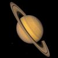

Venus

Mars

Jupiter
Saturn
Venus |
Mars |
Jupiter |
 Saturn |
|
|---|---|---|---|---|
| Mass (kg) | 4.87 x 1024 | 6.42 x 1023 | 1.90 x 1027 | 5.69 x 1026 |
| Diameter (km) | 12,104 | 6,787 | 142,800 | 120,660 |
| Mean Density (kg/m3) | 5,250 | 3,940 | 1,314 | 690 |
| Escape Velocity (m/s) | 10,400 | 5,000 | 59,500 | 35,600 |
| Average Distance From Sun | 0.723 AU (108,208,930 km) | 1.524 AU (227,936,640 km) | 5.203 AU (778,412,020 km) | 9.537 AU (1,426,725,400 km) |
| Rotational Period (in Earth days) | 243.02 (retrograde) | 1.026 | 0.41 (9.8 Earth hours) | 0.44 (10.2 Earth hours) |
| Revolution Period (in Earth days) | 224.7 | 686.98 | 11.86 | 29.46 |